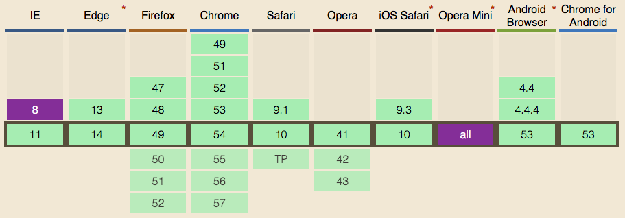
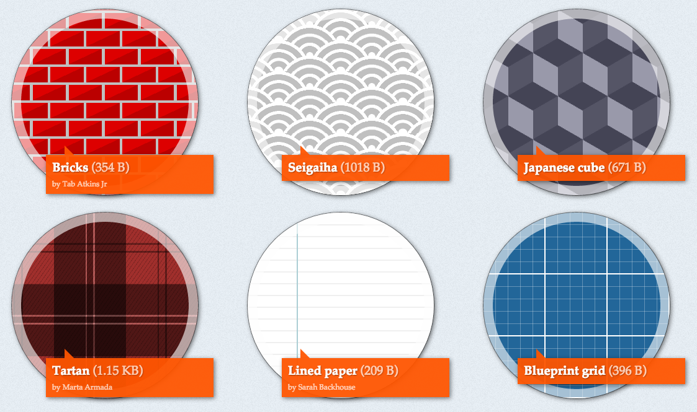
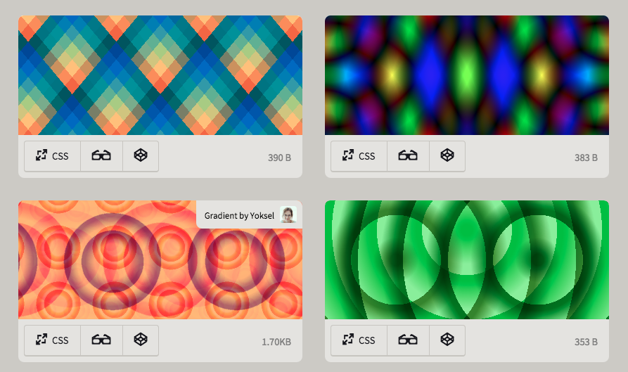
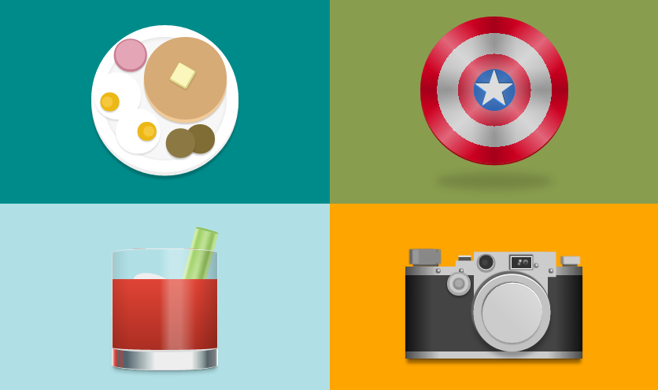
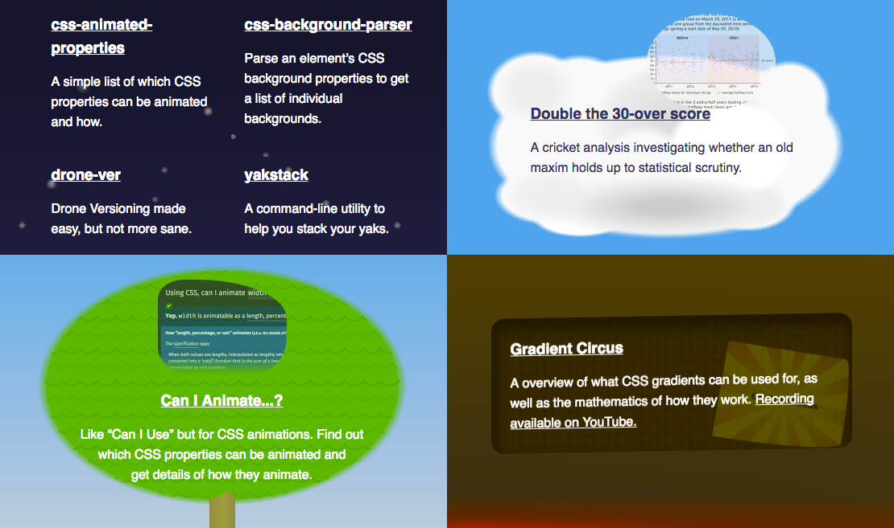
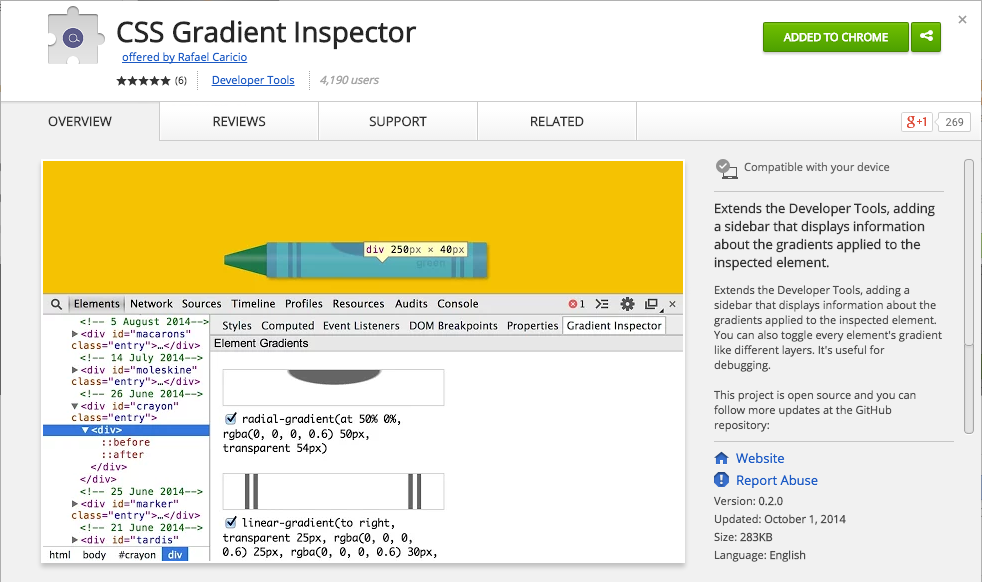
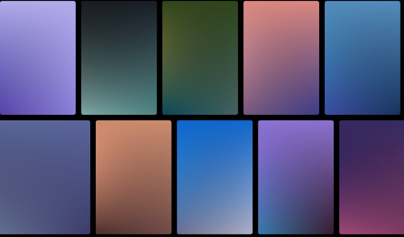
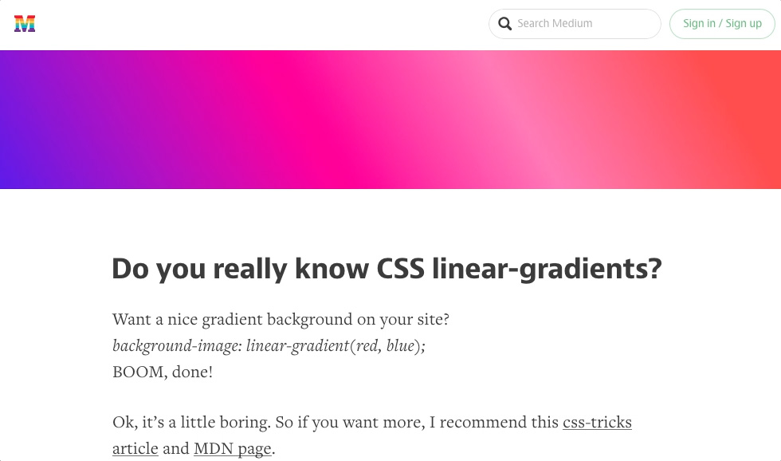
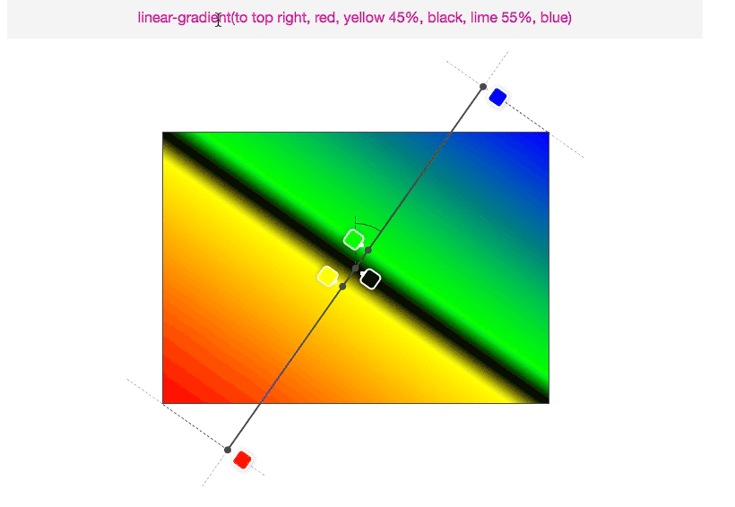
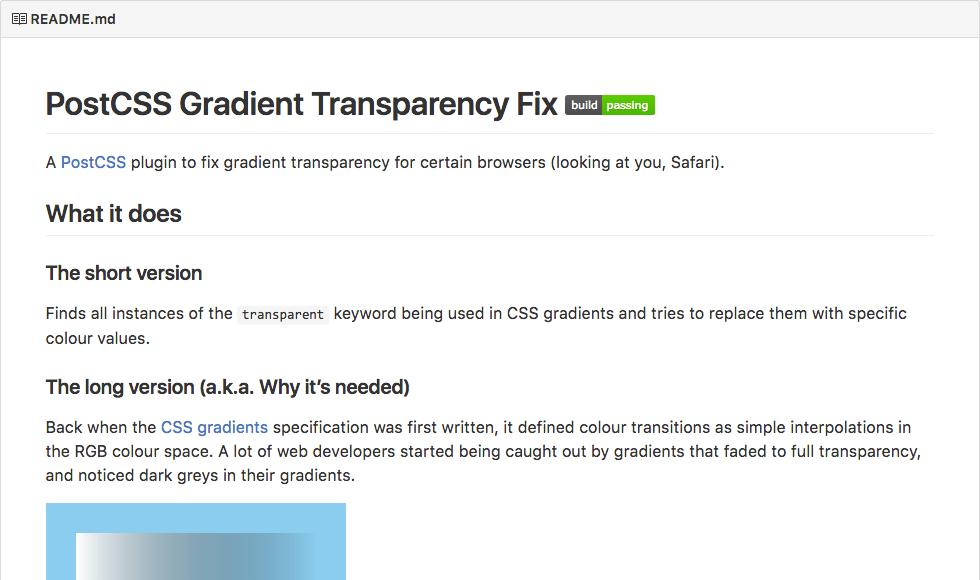

Hi there
Welcome to this slide deck for a talk at Decompress in December 2016.
Before you go browsing these slides, here are some things you should know:
- This deck was built and tested for use in one browser (Chrome) running on one machine (mine). Any other combination has no guarantees of working as expected (especially fonts).
- Use left/right arrow keys or spacebar to navigate the slides.
- Some slides have interactive content. Extra instructions have been added to these slides in this style.
- Source code for the slides is on GitHub.
You may proceed when ready.
Who’s this bozo?
- @iamnotyourbroom
- shoehornwithteeth.com
- Web tinkerer
Gradient Circus
Types of gradients
linear-gradientradial-gradientrepeating-linear-gradientrepeating-radial-gradient
Support

Act I
Tips and tricks
Patterns
Gradients only — lea.verou.me/css3patterns

Gradients + blend modes — bennettfeely.com/gradients

Pictures
A single div — a.singlediv.com

Themes
Blatant self promotion — gilmoreorless.github.io

Debugging
Gradient Inspector — Chrome Extension

Placeholders
Gradify — gradifycss.com

Background animation
Bit of a grey area
- One spec says no
- One spec says yes
- Browsers say um, maybe…?
| Cross-fade pictures | Transition gradients | |
|---|---|---|
| Chrome | ✔ | - |
| Safari | ✔ | - |
| IE / Edge | - | ✔ |
| Firefox | - | - |
The future
CSS Images Level 4 — Nowhere near finished
Among other things, it has…
Conic gradients
Not this
This
The future – today
Obligatory slide about Lea Verou
- From rough spec to proper spec
- Polyfill: leaverou.github.io/conic-gradient
- Use it, promote it, harass browsers for support
Act II
Background image layering
Images from the top, then colour
Remember, gradients are just images
background-color:
skyblue;
background-image:
url(...),
linear-gradient(...),
radial-gradient(...);Use number keys 1 to 4 to change the image
Images from the top, then colour
background-repeat:
no-repeat;
background-size:
60% 100%;
background-position:
100% 0,
0 0;
background-image:
radial-gradient(...),
radial-gradient(...);Use number keys 1 to 4 to change the image
Act III
Linear gradient angles
Do you really understand?


Act IV
Colour calculations
A basic example
linear-gradient(
to right,
hsl(220, 90%, 50%),
hsl( 0, 90%, 60%)
);linear-gradient(
to right,
rgba(13, 89, 242, 1),
rgba(245, 61, 61, 1)
);linear-gradient(
to right,
rgba( 13, 89, 242, 1),
/* ↓ ↓ ↓ ↓ */
rgba(245, 61, 61, 1)
);linear-gradient(
to right,
rgba( 13, 89, 242, 1),
/* ↓ ↓ ↓ ↓
rgba(129, 75, 152, 1)
↓ ↓ ↓ ↓ */
rgba(245, 61, 61, 1)
);- A simple gradient
- Convert to RGBA
- Interpolate each channel separately
- Example at 50%
Transparency
transparent == rgba(0, 0, 0, 0)
linear-gradient(red, rgba(255,0,0,0) 50%,
rgba(0,0,255,0) 50%, blue);Old spec
“Normal”
colour
- Safari
- Canvas
- SVG
New spec
Pre-multiplied alpha
- Chrome
- Firefox
- IE / Edge
Pre-whatified what now?
Pre-multiplied alpha – keeping transparent pretty
The formula for simple alpha compositing is
co = Cs x αs + Cb x αb x (1 - αs)Where
W3C: CSS Compositing and Blending Level 1
co: the premultiplied pixel value after compositingCs: the color value of the source graphic element being compositedαs: the alpha value of the source graphic element being compositedCb: the color value of the backdropαb: the alpha value of the backdrop
Simple, right?
Let’s try again — Blending 101
Blending partly-transparent red on a white background.1. Multiply source by the alpha value.2. Multiply background by the inverse source alpha value.3. Add them together
source |
+ destination |
= output |
||||
|---|---|---|---|---|---|---|
| R | |
|
|
|
|
|
| G | |
|
|
|
|
|
| B | |
|
|
|
|
|
| A | |
|
|
|
|
|
Now back to gradients
Normal |
||
| R | ||
| A |
Graphics chat
Often, it can be more efficient to store a pre-multiplied value for the color and opacity. The pre-multiplied value is given by
cs = Cs x αsW3C: CSS Compositing and Blending Level 1
- GPU
- Browser
- Let me multiply red x alpha at the start...
- Now please draw colour at the 40% mark
- OK. What’s the lerp red here?
- 0.6, but don’t bloody touch it
- Yeesh, calm down. And what’s the lerp alpha here?
- 0.6
- Cool, I will draw 0.6 red + 0.4 of the background red
- Final value is 1 red with 0.6 alpha
A little less conversation (a little more graphin’)
Normal |
||
| R | ||
| A | ||
Pre-multiplied |
||
| R | ||
| A |
Post vs pre
More self promotion — PostCSS gradient transparency fix

Grand Finale
Thanks, Decompress!
@iamnotyourbroom
Use number keys
1 to 4
to change the image